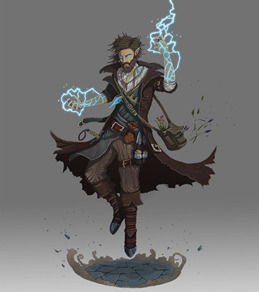

Liste von NPCs, gelistet unter wo sie uns das erste Mal begegnet sind; wichtige Personen haben eine eigene page
Death Maidens (Piratenflotte)
Hiro La'Ravia:
- früher Kapitän
- unter ihm Sklavenhandel
- gestürzt von Jara und Valresh (weil kein Sklavenhandel mehr)
- früher First Mate unter Hiro und Jara, jetzt Kapitän
- bissl Arschkriecher
- Kapitän
- Frau von Durbul
- hat freiwillig abgedankt und ist mit Durbul nach Port Dalos gezogen
- ermordet von Shakal, entgegen Versprechen gegenüber Durbul; vielleicht weil Schwarze Sonne Beziehungen zu Hiro oder Valresh?
Lauris
Towncryer:
- junger, männlicher Mensch
- Name unbekannt
- scheint ein Netzwerk von Nachrichten zu geben, die über Eulen verteilt werden: "Eulenpost"
- scheint journalistische Integrität zu haben, die aber kaufbar ist
- prunkvoll in Sagash-Wohlstandsmode mit Turban gekleideter Mann; überall Klunker, Ringe; Sogar Edelsteine zwischen den Zähnen
- links und rechts bewachend stehen 2 Goliath
- behauptet Archäologe zu sein wissenschaftliches Interesse an den Ruinen von Drusk zu haben
- eine Gruppe von Untergebenen sei eine Woche überfällig, sollte in die Schwarze Krypta eindringen
- war gelogen, er verfolgt die Gruppe zur Schwarzen Krypta und erzwingt sich den Vortritt - stirbt dabei
- hat auf Brust Tattoo von Dun'Amarah, recht einflussreichem Verbrechersyndikat aus Sagash, auf Grabräuberei spezialisiert
- recht junger Mensch
- hat Gans Ferdinand
- betreibt Fähre (eigentlich Flussboot) von Lauris nach Sagash
- sein Geschäft knapp vor Ende, wenn er nicht nach Reparatur seine Ladung abliefern kann - Problem mit den Wüstenhaien
- pro-Revolution
- rechter Arm verkümmert von Krankheit, von Roldar geheilt
- Durbul killt seine Gans, weil die magisch und von Weltuntergang usw. spricht - glaubt an Polymorph
- einer der sieben Drachen von Drunai
- Brass Dragon
- war Herold von Kuranesh
- stand unter Einfluss Apokais in Drusk, bevor wir ihn befreiten
- hilft jetzt wieder Kuranesh
- meint er würde uns helfen
Gwydur
Rayna:
- Elfin, in Felle gekleidet, Umhang aus geflochtenen Blättern
- weiblich, weißliches Haar
- hat zwei kleine Schweine als Freunde: Ixbo und Azi
- Elf
- silberne, schöne verzierte Rüstung, mit verziertem Helm, Speer
- scheint eine Art Wachkommandant zu sein?
- die "Seherin", Anführerin der Waldelfen
- zierliche Gestalt in seidenen Gewändern, hellblonde Haare am Rücken hinunter
- Krone aus Silber und Elfenbeingeweih
- hat jungen, grünen Drachen "Cami", von ihrer "Schwester" aus den Arkenwoods - spricht wohl von Shirvana
Valun
- Klaudio Klapperschlang:
- nervöser Gnome in neonfarbige Gewänder (Wildkatzenmuster, glänzend), Irokese in Vokuhila übergehend, Ketten mit Klunkern um den Hals
- Anführer der "Menacing Menagerie", Wanderzirkus/Zoo mit exotischen Tieren
- will uns anheuern einen entflohenen jungen Roc zu fangen, wir lehnen ab
- Albatross: anführer der Revolution; großgewachsener, rothaariger Mensch/Mann mit Bart
- Jakobinius: Herr der Stallungen, etwas zwielichtig, versucht uns 50g pro Pferd abzuknöpfen, scheint nach einiger Diskussion seine Arbeit aber Ernst zu nehmen
- Monk in weißen Roben:
- verbundenen Augen, roter Stoff von Schulter herunter, verzierter Stock im Gürtel, spricht kein Wort der Verteidigung
- scheint Anführer ("Meister") der Mönche zu sein
- verzierter Stock kann sich in viele verschiedene Waffen verwandeln
- ist wahrscheinlich ein Adalant
- Gash'we

- uralter Mann, schaut aus wie Mensch
- voller Falten, braune Roben, Mensch, nicht viele Haare, Bart, scheint blind zu sein, aber kann auch irgendwie sehen
- hat Familiar (?) namens Synco, eine Art Homunkulus, großaugig, zerfledert
- spricht kryptische Dinge, scheint sehr viel zu wissen: über jeden von uns, über Apokai, über die drei schwestern
- eine jüngere Version (?) scheint im Arbitrarium Bibliothekar zu sein, hat Pseudodragon als Familiar
- einer der Gründer der Scarlet League
- hat bei der Verbannung Apokais mitgearbeitet
- ist jetzt Berater von Kuranesh im Arbitrarium
Arden
- Eladrin Ferell: Anführer der Revolution von Arden
Fort Dalos und Dalos
- Ebron: besoffener stadtwache
- Bexy: dwarf female, chef vom hängenden dieb, in der "Blauen Feder" Untergrund-Org.
- Jerry: halbelf, schlacksig, kellner im hängenden dieb, ehemann von betzi
- Clay: bettler, halbelf, älter, alkoholiker, ehemann der alten gran
- "schleicher": schwarze kutte mit hood, schwarz-violettes gewand darunter, pfeife, schent grim zu beobachten, wahrscheinlich mörder von quinn, wahrscheinlich mensch/elf/halbelf (schuhe, aussehen); später stellt sich heraus: heißt Velmonde, Kultist, Mörder, wir töten ihn
- Oskar Reeves: bürgermeister, fetter mensch, schöne seidengewänder, monokel, unsportlich
sagt menschen paranoid, bürger nahe wald verschwunden, vllt kult in arkenwoods (gerüchte)? schon mehrere truppen stadtwachen in wälder verschwunden
hat pakt mit kultisten: keine manticoreattacken gegen lieferungen von gefangenen
hat pakt mit donovan, der auch gefangene liefert
kommt von angesehener Kaufmannsfamilie
hat pakt mit kultisten: keine manticoreattacken gegen lieferungen von gefangenen
hat pakt mit donovan, der auch gefangene liefert
kommt von angesehener Kaufmannsfamilie
- Thorben: assistent/schreiber von bürgermeister, länglich, schmal
- Leutnant Lonovel Nielev: kompetent, groß, chef stadtwache, weiß laut fiona und durbul eher nichts von reeves' pakt mit kultisten
- Sera: rezepzionistin der goldenen forelle, blond, menschenfrau
- Zora, nähe rathaus, rothaarig, anfang 20, menschenfrau, teures appartement, ex-waisenkind, hat baby, verheiratet mit soldat in marine, höherranging; scheint artefakt in pyramidenform zu besitzen (wurde angeblich von den 2 halbelfen aus kultistencamp gesucht)
- Jonah, halbling kind, waise, blond, männlich, sucht schwester Siri (an die drei schwestern weitergegeben)
- Brigadier Donovan:
- kommandant in Fort Dalos, möglicherweise korruption mit bürgermeister von dalos
- schöne Kleidung, Orden, Lederumhang, schön verziehrter Degen (!), weiße Haare, Bart
- guter Kämpfer
- Jeefy Grimspein: schmied, gnome, im untergrund blaue feder, hat frau
- Arnaud Filizius Levine:
- tiefling (blaue haut, rote haare, gekrümte hörner, feine kleider, leder, stock mit goldenem knauf, humpelt weil bein 1 woche verloren)
- untergrundführer "Blaue Feder", wollen alte Monarchie von Drunai zurück
- seine Frau Fyona (auch tiefling) Nachfahre von letzten König (so 500 jahre her...)
- schwester = clanführerin der Levines, gypsies im arkenwood, haben magic händler
- will uns 3 magische gegenstände geben, wenn wir seine verschwundene Frau finden (verhaftet weil gegen Bürgermeister antreten wollen, dann zu Kultisten verschleppt)
- hat halb-orc Freund Gulbur (in Revolte gefallen) und Abrib (Brüder)
- Fyona Levine (geboren Fyona Dhal'Kuranesha):

- tiefling
- Nachfahre von letzten Apokai
- genannt die "Blaue Feder"
- Anführerin der Revolution von Drunai
- wohl ziemlich starke Magie-Userin
- "Redcape": anführer der Lorekeeper-Verstärkung für attica
- streitet mit attica, wohl darum in Dalos einfach den Revolt zu ignorieren
- hat gezacktes, riesiges greatsword
- kämpft gegen mob nonlethal, bis es gefährlich wird für sie, dann beginnt er zu töten
- schleppt gefallenen lorekeeper mit
- Kayne Henceworth:
- Leutnant der imperialen marine
- Mensch, schnauzbart, buzz cut
- Revolutionär, plant mit Arnaud
- wurde von Sahuagin gefangen genommen beim Versuch Arnaud durch Sewer/Grotte hineinzulassen, seine Männer getötet
- hilft der Party bei der Gefangennahme von Donovan, sieht dabei wie Grim zum ersten Mal Satharius verwendet (und dabei einige Soldaten sterben)
- bekommt auch mit, dass wir das persönliche Vermögen von Donovan klauen
- erpresst uns danach mit diesem Wissen
- später gibt es Gerüchte er habe Arnaud Levine getötet, sei nicht mehr aufzufinden
Arkenwoods
Abron Capman

- kommt von elesse
- hat branding am unterarm: kreis mit striche (heißt flotte von lynx)
- 3 wochen gefangen
- weiß halskrause = arcane lock
- gefangen auf hoher see, ganze crew von captain lynx
- hat haifisch-schmuck
- halskrause shockt bei magic use
- wir geben ihm säbel
- geschwächt von halskrause, magic nicht komplett da
- zurückgelassen bei hintereingang der wayward mine for ritual von apokai
- nächsten tag verschwunden, scheint kampfspuren gegeben zu haben
- freund von abron
- halbling
- zuletzt gesehn auf sucha nach abron, mit zusammengesuchter rüstung und handaxe von durbul
- anführer der kultisten
- goliath mit viel Rüstung (2.4m), axt so groß wie er, 2 mammuthauer über schultern nach vorne
- keinen unterkiefer oder zunge, spricht aus axt heraus
- axt scheint intelligent zu sein (sagt "wirf mich" oder so zu shakal während fight, schafft saving throw gegen enlarge/reduce)
- flieht mit riesenmanticore beim zusammenfallen der dwarven citadel
- menschenfrau, alt
- verheiratet mit clay
- war früher normal, aber seit 10 jahren komisch
- "füttert"(?) kinder an die drei schwestern
- mann und frau
- schauen zuerst alt aus und behauptet eltern von zora (waise) zu sein
- dann zieheltern, obwohl im waisenhaus aufgewachsen
- shapeshiften nach miri's konfrontation zurück (oder illusion? aber wie so lange in gefangenschaft auferhalten?)
- fliehen, mann stürtzt sich in durbuls klinge als dieser ihm droht, "ihr versteht die situation nicht"
- frau entkommt
- anführerin der dryaden
- überrascht uns bei rest, lässt sich überzeugen dass wir keine feinde
- lässt uns, abron und kultisten laufen für gefallen: grünes ei von giant zurückholen
- will uns nach kultistenende gegen attika und lorekeeper helfen, wird aber gefangengenommen
- entkommt durch unsere hilfe bei dryaden-ambush wieder

- kugelrunde gestalt, schaut aus wie übergewichtiger goblin mit violetter haut, weißer bart zur seite und nach unten, gelbe augen, zähne in alle richtungen, violetter zylinder (irgendein tier drin), stab mit orb
- fährt in kleiner kutsche mit pony und schwer gepanzertem oger als fahrer
- kutsche innen größer, riesige halle, überall regale, kleine goblins überall
- die goblins testen all emöglichen dinge, waffe, teilweise werden sie verwundet, aber scheint normal zu sein
- zieht von Sagash nach Amberville hin und her
Port Skye
Florien Thiros: guter freund von teddy, marktplatz in port skye, verkauft auch magische gegenstände
Lord Morfir Aleantlarn:
- >200 Jahre alter Elf, schwarze, hüftlange Haare, schlank, aristokratischer/hochnäsiger Gesichtsausdruck
- ist früher wohl irgendwie mit Roldar zusammengestoßen
- hat vielleicht Pakt mit der Schwarzen Sonne (Treffen mit Velmonde) - aber das war aus Vision von Apokai, Wahrheit unsicher